Problem Definition
Method and Implementation
1. Split the data set into 5 mini batches, and perform 5 rounds of training. For each round, pick a distinct mini-batch as the test set and the rest as train set.
2. In training,initialize all weights and perform forward propagation to get initial output values. Then, perform backpropagation to update the weights given epoch as the number of rounds of weight adjustment.
3. For testing, use the test set X values as input and feed it to the trained model, get the predicted values and compare them with the test set Y values.
4. Evaluate the model by generating a confusion matrix.
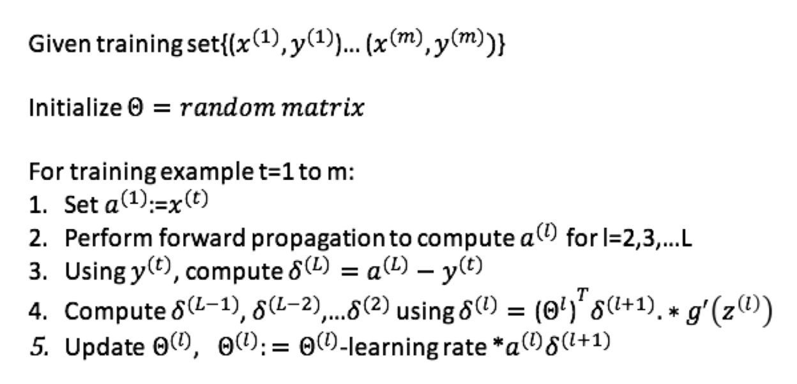
Code Outline
1. class LogisticRegression: This is a wrapper for a genral neural network model with backpropagation algorithm implemented.2. five_fold(...): takes a whole dataset, learning rate as input to train a dataset. It also takes two models, one with L2 regularizaiton and one without, so that we could precisely learn how L2 regularization could affect the result of a trained model using the same train set and test set.
3. digit_recognition(...): This is used for the digit recognition part. In this part, we don't need 5-fold cross validation, instead, the model is trained on a whole dataset and tested using a different dataset.
Experiments
1. To learn the effect of L2 Regularization, I passed one model with L2 regularization and one without it to 5-fold cross validation, and have them trained and tested on the *exact* same train set and test set. Then, output the confusion matrices generated and compare the TP, TN, FP, FN rates.
2. To learn the effect of learning rates, I tested the model with 10 different learning rates and compute their accuracies, then generate a line graph to visualize them.
3. For the digit recognition part, I still used a confusion matrix to evaluate the trained model.
Results
Linear Data w/ learning rate=0.01
| Round 1 | Round 2 | Round 3 | Round 4 | Round 5 | |
| Linear Data | 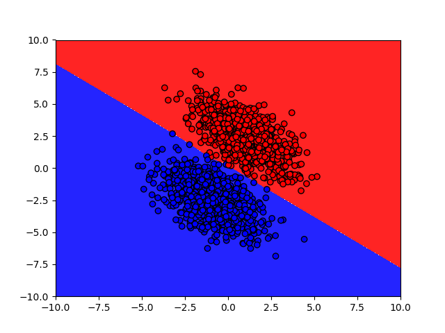 | ||||
| Linear Data w/ L2 | 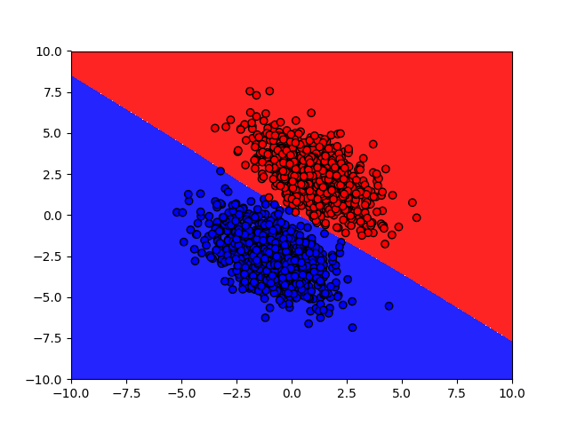 | 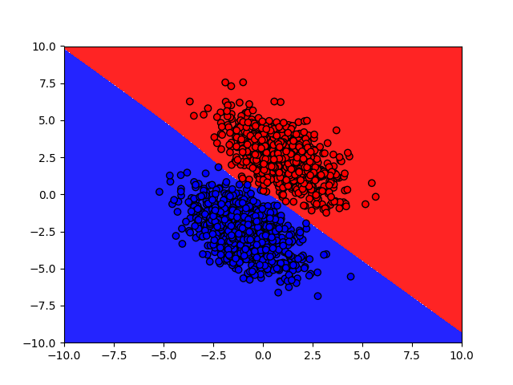 |
 |
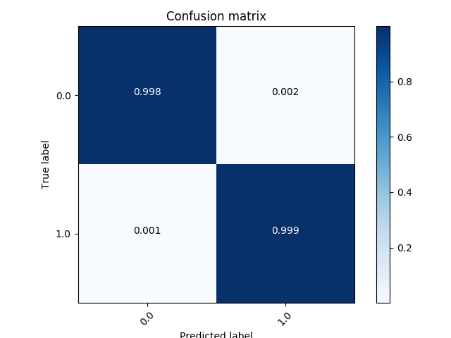 |
| Linear Data w/o L2 | Linear Data w/ L2 |
From the confusion matrices, we can see that for linear data, there is slightly an improvement. But since the accuracies are already high enough for linear data, this improvement is still meaningful.
Non-Linear Data w/ learning rate=0.01
| Round 1 | Round 2 | Round 3 | Round 4 | Round 5 | |
| Non Linear Data | 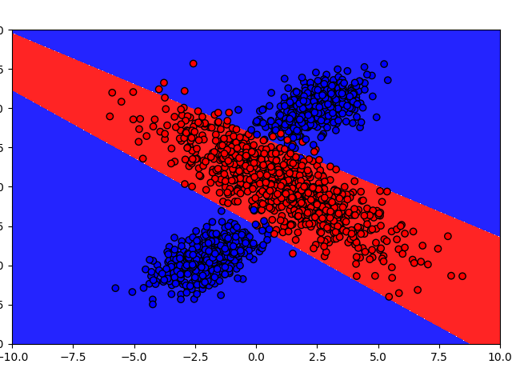 | 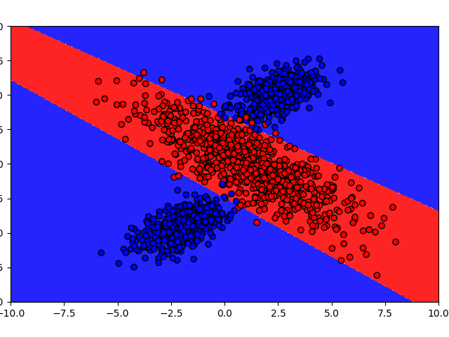 | 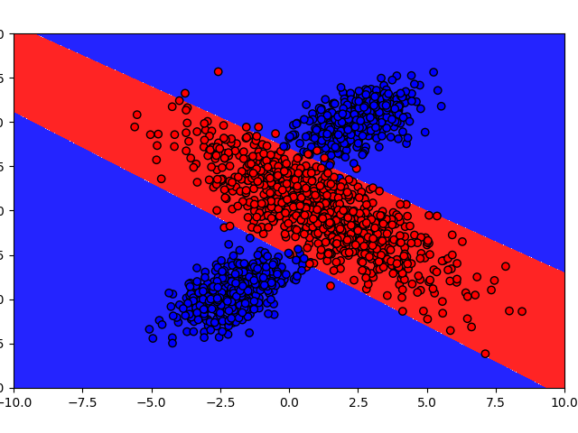 | 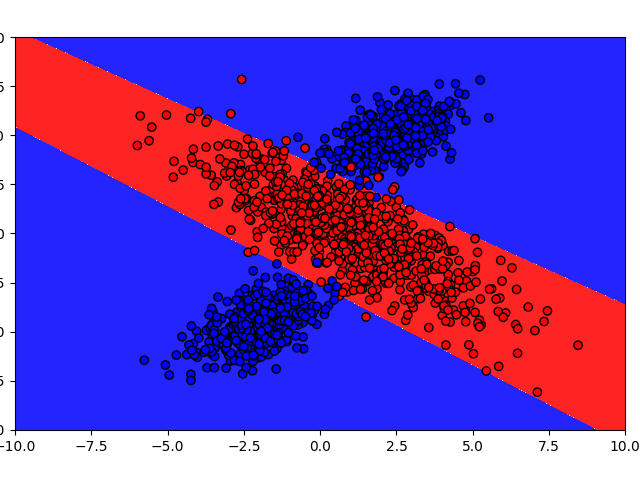 | |
| Non Linear Data w/ L2 | 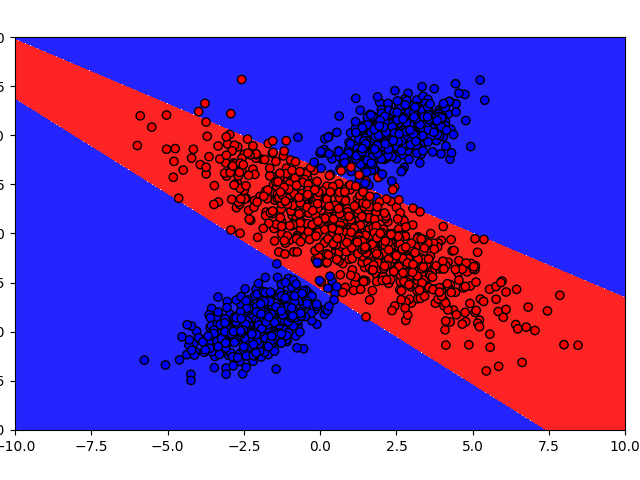 | 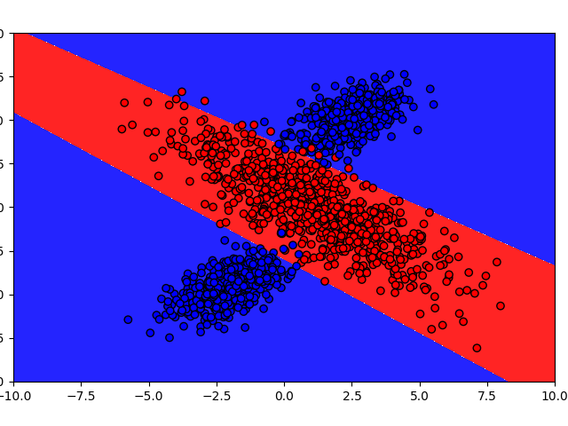 | 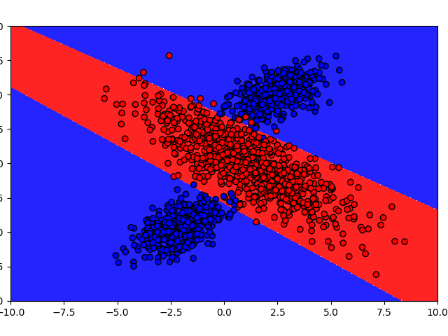 | 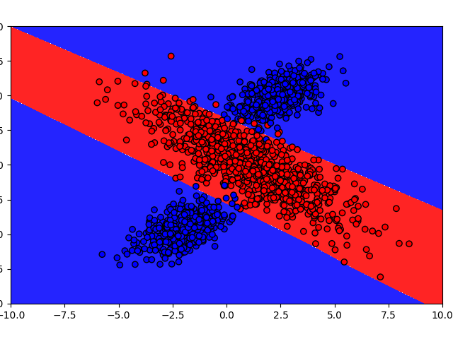 | 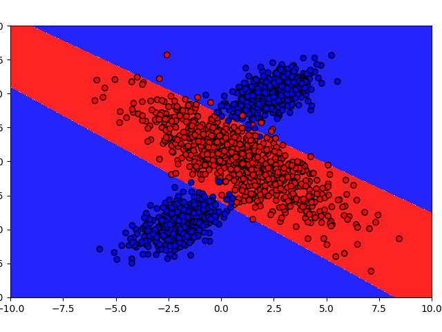 |
| 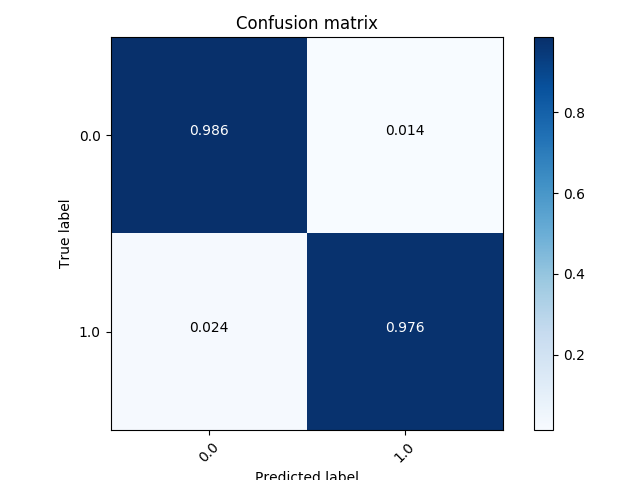 | |
| Non-Linear Data w/o L2 | Non-Linear Data w/ L2 |
From the confusion matrices, we can see that for non linear data, the TP rate is high with L2 regularization. But for FP and FN rates, they both decrease. This indicates that with L2 regularization, the trained model has less overfitting. We can also observe this by looking at the boundry. It's easy to see that with L2 regularization, more blut dots are included within the decision boundry than it without L2 regularization.
| 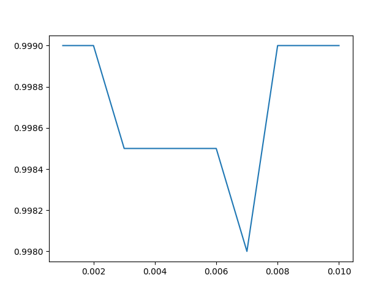 | 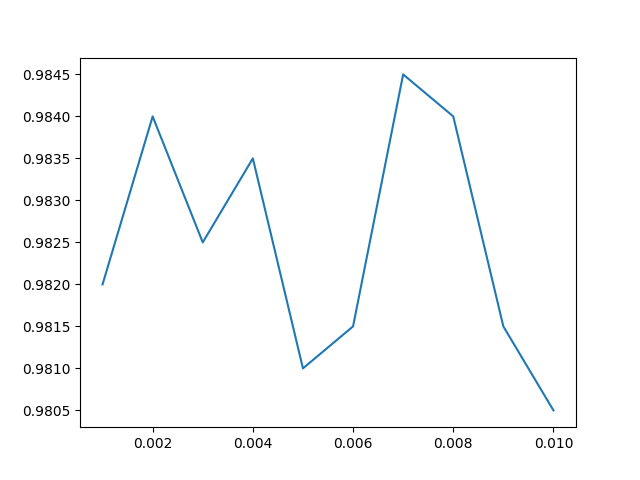 |
| Linear Data | Non-Linear Data |
From the Line graph, we can see that learning rates do not monotonically affect the accuracies. Epochs, the rounds of weight adjustment, also play a role in the training process. As we can easily figure out that to get the same level of accuracy, rounds of learning needed and learning rates have a reciprocal interaction.
Digit recognition needs a much lower learning rate and a much higher epochs for it to be trained and get an acceptabble result. I set learning rate=0.001, and epochs=2000, lambda=0.01 to have this worked out. The result is pretty good, and I'm awesome.
Discussion
2. L2 Regularization: Adding the sum of squared weights to the cost function, so we won't take too many distinct features into account.
3. Less hidder layer nodes: Too much hidden layer could catch too many unnecessary features, which could potentially make the the model overfit the train data.
Conclusions
Machine Learning is fun! Neural net is mind-blowing magic!
Credits and Bibliography